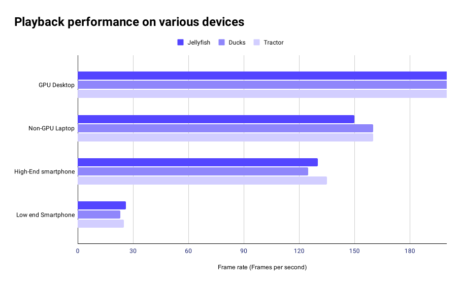

Vectorly's AI upscaler libraries convert low resolution video to HD in real-time on users' devices, enabling HD viewing experiences while using 50% to 90% less bandwidth ("AI Compression").
Super Resolution
Vectorly's AI upscaling technology is based on a concept called Super Resolution, which uses AI to upscale and enhance images. Through Super Resolution, we can upscale and clean-up low-resolution video, making it look close to HD quality.
Super Resolution Example:
240p
240p upscaled to 720p
Original 720p
While AI enhancement tasks normally require lots of computation, we've developed ultra-fast upscaling technology which can run in real time, even on low-end smartphones.
This lets you stream SD video streams to users, and upscale it to HD in real time as they're watching it, providing an HD viewing experience while only consuming the bandwidth for the low-resolution video (50 to 90% less data than for the HD video).
Upscaling libraries
Vectorly's AI Upscaling libraries run entirely on the client side, within your website or app. They work as plugins to native or HTML5 video players, up-scaling and enhancing video content as your users watch it.
You can think of AI upscaling as a final, optional layer at the end of the video streaming pipeline. Upscaling happens after video is decoded and rendered by the browser, meaning that it is compatible with any codec, any streaming architecture (HLS/DASH etc…), and works equally well on live and video-on-demand content, as well as video conferencing.
We are currently working on Android and iOS mobile SDKs.
Getting Started
First, sign up in the dashboard to get a token which, you will need to use the library. Next, you can install the upscaler library via NPM or via CDN
There are various versions available, including the vectorly-upscaler.js library, as well as plugins for different HTML5 video players. You can find version specific installation instructions here.
Hello World
The fastest way to get upscaling that "Just works" is to use the vectorly-videojs.js videoJS plugin. If you load the following code and you should be able to instantly see the video playing
Make sure you add your token, and verify that "Upscaler initialized" is being displayed in the console.log, in order to know that it's working. You can see a working example on Code Pen.
For other players, scroll down to the web section or see the full API here
Web
For web environments, we've packaged our upscaler as a standalone Javascript library, as well as as plugins to several popular HTML5 video players (see the full API for more detail).
Basic usage
For the vectorly-upscaler.js library, the basic API involves instantiating a vectorlyUpscaler object, and specifying a video element.
const video = document.getElementById("video");
const config = {
token: '...'
};
const upscaler = new vectorlyUpscaler(video, config);
This automatically upscales the video, by overlaying a canvas element with the upscaled video frames on top of the video element. When the video plays, the upscaler will automatically upscale each frame and update the canvas element. See the styling section for more detail.
Plugins
Besides the vectorly-upscaler.js library, we have several plugins for specific HTML5 players. (see the full API for more detail).
When you feed that video element to the Upcaler instantiation function, it will create a canvas element as a sibling node, with the same parent node as the video element.
<div id="container">
<video src="video.mp4" style="visibility: hidden"></video>
<canvas id="output" ></canvas> // Where the upscaled frames are drawn
</div>
The upscaler library styles this canvas to occupy 100% of the width and height of the parent element, which in practice, covers the video element in most HTML5 video player interfaces.
To have more control over the styling and position of the output, you can use the containeroption, to specify a div element to place the destination canvas.
const video = document.getElementById("video");
const div = document.getElementById("my-div");
const config = {
token: '...',
container: div //Any div element,
};
const upscaler = new vectorlyUpscaler(video, config);
The output canvas will occupy the exact dimensions of the container div, and will dynamically resize and re-position whenever the container div is moved, resized or changed. To dynamically style and position the output therefore, you should style and position the container element.
Models
There are multiple AI models you can choose from. The default is 'residual_3k_3x', but you can specify a model when instantiating the upscaler object
Once the ExoPlayer view is set up, you can call set up the Upscaler as in the following example. You'll need to feed your API key, which you can get from the Vectorly dashboard.
You can also use Vectorly's AI Upscaler for upscaling video streams in any WebRTC video conferencing system.
General WebRTC
The vectorlyUpscaler object works with any video tag, so for a WebRTC application, all you need to do is to instantiate the upscaler object with the video element you want to upscale.
const upscaler = new vectorlyUpscaler(document.getElementById("remoteVideo"), {width: width, height: height});
We have an example repository, showing how Vectorly can be integrated with WebRTC, as well as a full working general WebRTC demo here.
Integrating the upscaler with any specific Video Conferencing API or service just requires finding the video element associated with video stream you want to upscale.
Agora
For Web deployments using Agora, you can find the video element of the stream you want to upscale by using the stream's ID.
You can integrate Vectorly's AI upscaler with Daily.co if you're building a custom custom video chat interface . Using the default React code sample from Daily, we've built a full working demo reference
useEffect(() => {
videoEl.current &&
(videoEl.current.srcObject = new MediaStream([videoTrack]));
if (videoEl.current && props.isLarge) {
window.upscalers = window.upscalers || {}
window.upscalers[videoTrack.id] = new vectorlyUpscaler(videoEl.current, {token: 'insert-vectorly-token'});
}
}, [videoTrack]);
You just need to make sure you intercept the video element associated with the video track you want to upscale.
Vectorly's API upscaler is not compatible with the pre-built UI from Daily.co, as the pre-built UI is loaded via iframe, making it impossible to access the video element through a third party application.
Demos
Below are a few demos of our upscaling technology.
Our upscalers are currently based on WebGL 2.0, and will throw an error on Safari and Internet Explorer. We are working on making our libraries backwards compatible with WebGL 1.0, which covers every major browser.
Benchmarks
For Super Resolution, the most practical challenge is client side performance, as it requires doing large numbers of computations. This can especially become an issue when dealing with low-end devices (such as entry-level smartphones).
Accordingly, we have focused a great deal on making our AI models as efficient as possible, to enable good quality outputs while still maintaining good client-side rendering performance on low-end devices.
Below, you can see the quality and performance metrics output for the demos outlined above. All of our performance results are for our generic upscaler model. We plan to make more models for different devices, and different qualities.
Framerate
The primary "cost" to doing super-resolution is computational complexity. While we have put a lot of work into making super resolution feasible on client devices, it is still something which needs to be managed. Here, we provide some initial performance benchmarks for the same demos shown above, in the demos sections.

Note
Upscaling time varies from frame to frame, so we provide average framerates. Framerates for desktop were over 500fps, but we capped the graph for clarity purposes.
For reference, below are the specs for the devices we tested on
GPU Desktop
Non-GPU Laptop
High-end smartphone
Low-end smartphone
Device
Alientware Aurora R11
Dell XPS 13
Samsung Galaxy 8
Samsung A2
CPU
Intel Core i5 x 6
Intel Core i7 - 1.8GHz x8
Exynos 1.9 GHz x8
Exynos 1.6 GHz x8
GPU
NVIDIA GeForce GTX 1650
Mesa Intel UHD Graphics 620
Exynos Mali-G71 MP20
ARM Mali - T830 MP1
Retail Price ($ USD)
$1200
$1200
$600
$90
Quality
The primary benefit of Super resolution is to increase video quality. Using the original high-resolution video as a reference, we can use traditional video quality metrics like VMAF to quantify the quality improvement of Super Resolution, when compared to normal bicubic upscaling of the downsampled / low-resolution video content.
Our general AI upscaler filter generally achieves a 10 to 15 point VMAF improvement compared to bicubic scaling. With content-specific AI models, or heavier models, we will likely be able to achieve further quality gains. We are currently working on releasing quality comparisons for content specific models.
Quality visualization
For reference, below are side by side comparisons of bicubic upscaling of the low-resolution original / Super resolution of the low-resolution / High resolution original